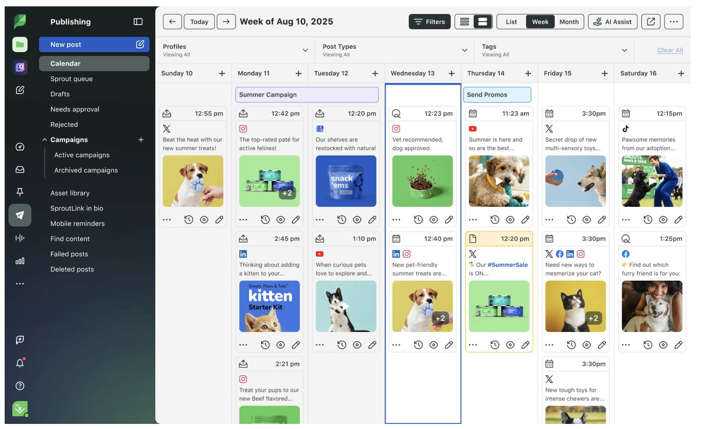

The unit’s organizing claim: social isn’t one channel; it’s a bundle of jobs. This piece is the case for what organic is doing in that bundle — once you accept it isn’t doing reach.
What Organic Is For Now
Part 1 ended on a question the unit hasn’t yet answered. If a brand reaching 90% of US households at retail can have a social audience small enough to fit in a high school auditorium — if engagement at “industry average” means twenty-one humans clicking like on a post — then what is the marketing team actually buying when it funds an organic social program? Most teams haven’t answered that cleanly. The default answer is some version of the LinkedIn-feed-consultant pitch: organic social media is a relationship business. Post consistently, three to five times a week. Use the right hashtags. Reply to every comment. Provide value, not promotion. Build the audience, and the audience will compound. The advice has the right shape. It also describes a version of organic social media that stopped existing somewhere between 2018 and 2024, alongside the rest of the version Part 1 documented.
Here’s the math the consultant’s pitch deck doesn’t show you. The brand follows the advice. Posts five times a week. Engages with every comment. Uses the hashtags. After six months, the brand has 12,000 new followers and a 0.7% engagement rate on the median post. Reach is roughly 2% of followers per post on Facebook, around 4–9% on Instagram. A typical post hits a few hundred humans. The dashboard reports the engagement rate as “industry average,” which it is. The brand’s actual sales line shows no detectable lift. Six months of posting consistently bought the brand approximately nothing. The CEO asks what happened. The agency says they need to post more.
This piece argues the opposite. Organic isn’t a posting-volume problem. It’s a job-mismatch problem. Most brands are using organic for the one thing it’s genuinely bad at — reaching new customers — while ignoring the four or five things it’s genuinely good at. The fix isn’t more posting. The fix is to be honest about what organic is for and to stop measuring it against goals it was never going to hit.
Organic social media isn’t dead. It’s narrower. It’s for research and listening, customer service, employee advocacy, community on the platforms where community still works, the kind of brand-voice work that compounds over years, and the dark-social amplification you can’t see directly but is still real. It isn’t for reach. It isn’t for top-of-funnel customer acquisition. Treating it as those things is the single biggest reason most brands’ social programs feel like they’re running a treadmill at full speed and going nowhere.
Why “Post More” Stopped Working
How distribution actually works
Start where most readers do: the intuition that if you have 50,000 followers, all 50,000 see your posts. The intuition is wrong by roughly an order of magnitude, and the mechanism is worth naming clearly because it explains almost everything else in this piece.
Take Instagram, since it’s the platform most students will think of first. Each platform sets a rough target engagement rate by account size — the rate a typical brand of that size is expected to earn. For Instagram in 2026, the working benchmarks look like this: nano accounts (1K–10K followers) are expected to land at 4–6% engagement; micro accounts (10K–50K) at 2–4%; mid-tier (50K–500K) at 1.5–3%; macro accounts (500K–1M) at 1–2%; mega and celebrity accounts (1M+) at well under 1% (Creatorflow, 2026, drawing on Social Insider 2026 benchmarks). The pattern is consistent across platforms: smaller accounts are expected to outperform larger ones on percentage terms because their audiences are tighter and more responsive.
Hit that benchmark and the algorithm shows the post to roughly 5–10% of your followers — currently 6.8% on average for Instagram accounts under 100K, dropping to 3–7% for accounts over 100K (Creatorflow / Hootsuite, 2026). That’s the baseline distribution. That’s the floor and the ceiling of what “your followers see your posts” actually means at a typical brand account.
The mechanic gets sharper at the tails. Exceed the benchmark and the algorithm expands distribution: more of your own followers see the post, and the post starts leaking to non-followers — friends-of-followers in the main feed, the Explore page, and (for Reels) the discovery surface, where roughly 55% of views now come from non-followers (Outfame, 2026). Miss the benchmark and the algorithm throttles distribution well below the floor. Industry tracking puts it at 10–15% of normal reach for under-engaging accounts (Blackbird Digital, 2026). In small-business accounts we’ve analyzed in advertising classes, a 15,000-follower brand that should reach roughly 1,500 followers per post sometimes reaches a few hundred; in one case the brand was reaching no more than 20 people per post on average. Same follower count. Different engagement signal. Reach down by two orders of magnitude.
Two things follow that change how you should read the rest of this piece.
First, the relationship between engagement and reach is a closed feedback loop: engagement determines reach, reach determines which followers see the post, which followers see it determines the next post’s engagement signal. Once the loop tilts one way, it keeps tilting. A brand with three weak posts in a row isn’t just having three weak posts — it’s being demoted in the algorithm, which makes the fourth post weaker than it would have been on the same content earlier.
Second — and this is the paradox — engagement rate is a vanity metric (as the forthcoming Attribution work will argue at length) and it’s also the only signal that determines whether your followers see anything you publish. Chasing engagement is a losing game on its own terms (interactions don’t equal sales), but failing to earn engagement collapses distribution entirely. You’re trying not to win the metric. You’re trying not to lose it badly enough to get throttled.
The practical takeaway for how to read everything below: when this piece talks about “your organic post reaches a small subset of your followers,” that’s not casual phrasing. Roughly 80% of organic views on a typical brand account come from the same algorithmically-favored slice of your following, being shown post after post — plus whatever leakage your engagement signal earned you. The rest of your nominal audience effectively doesn’t see what you publish.
Why “post more” doesn’t fix this
The default response to declining organic reach, across roughly the past seven years, has been to post more. The logic is intuitive: if 4% of followers see each post, then doubling the post count should double the absolute number of impressions. The logic is wrong, and it’s wrong in several different ways that are worth taking seriously because the wrong answer is still the most commonly-given one in the discipline. And the trade press has plenty of data that appears to support it — the strongest version is Buffer’s chart below.
The data above is real. Buffer pulled it from genuine posts. The interpretation that gets bolted onto it — therefore, post more — is what’s misleading, in two ways.
Mechanism 1: correlation, not causation, hidden inside an algorithmic confound. Platforms reward accounts that produce engagement signal as a class. A brand posting ten times has more shots at landing engagement, which raises its overall algorithmic standing, which raises baseline reach on every subsequent post. That looks in the aggregate data like “posting more works.” What’s actually being rewarded is engagement frequency, not content frequency. The brand isn’t earning extra reach because it posted ten things. It’s earning it because two of the ten landed, and the algorithm noticed.
Mechanism 2: selection bias. Brands that post 10+ times per week aren’t a random sample of all brands. They’re bigger, better-resourced, with content systems already in place — modular asset libraries, creator pipelines, production budgets, social listening, audience research. The chart isn’t a controlled experiment showing what happens when a 1-2-post brand starts posting ten times. It’s a snapshot of where different brands already live. The brand at the bottom of the chart isn’t a brand that would climb the chart by posting more — it’s a brand that hasn’t built the infrastructure to credibly produce that volume.
The second-order problem is the one to watch. A team that reads the chart and concludes “we need to 10x our posting” without first building the infrastructure to back it up does what every team in that situation does: turns the work over to AI for variation, generates more posts from the same generic hooks, fills the calendar with convergent slop. The chart’s apparent advice — post more — becomes the gateway to the noise denominator from Part 1 §03. Same brand. Higher post count. Lower per-post engagement. Lower reach. Worse position than where they started.
The synthesis the chart is actually pointing at, if you read it carefully: post like the brands at the top of the chart — which means produce at their infrastructure level, not at their frequency. That’s not a post more recommendation. It’s a fund creative production properly recommendation, which is what the rest of this piece — and Part 4 §04 — actually argues.
The first problem follows directly from the mechanic just covered. More posts means more chances to fall below the engagement benchmark on any given one, and once posts start falling below benchmark, the algorithm throttles the brand’s subsequent reach. Posting more, paradoxically, often lowers the reach of each individual post — the Pathfinder consultants’ advice to “post consistently” is operationalized inside Meta’s and TikTok’s ranking systems as “produce more low-performing content, and we’ll punish you for it.”
The second problem is audience-side. Your customer’s feed isn’t infinite. There’s a finite share of attention they’ll spend on brand content in any given week. If you post five times, you’re fighting yourself for the slot — not adding new opportunities. The fifth post in a week from the same brand earns less attention than the first one would have, and the average performance number sinks.
The third problem is brand-side, and it’s the one nobody wants to talk about: most brands don’t actually have five things worth saying every week. A truly novel observation, a piece of original work, a moment of cultural relevance, a customer story that genuinely lands — these are scarce. They happen at the cadence of maybe once or twice a month at a well-run brand, not five times a week. The discipline papered over the scarcity by inventing “content pillars” and “repurposing” and “evergreen content” — all of which is honest work, and all of which has been used as cover for the fact that most weekly posts are filler made to satisfy the calendar, not because the brand had anything to say.
Filler doesn’t perform — and worse, it trains the audience that the brand’s account isn’t worth checking, which depresses the genuinely good posts when they happen. A brand whose feed is 80% filler and 20% real work performs worse on the 20% than a brand whose feed is only the real work.
The replacement isn’t less. It’s different. The brands getting organic social right in 2026 are mostly posting on a slower cadence, putting more production weight behind each post, and treating most of the work that used to live on the brand’s feed as something better done elsewhere — on creators’ feeds, in employee posts, in dark social, in email, in their own community surfaces. Part 4 picks up that thread in operational detail.
When Organic Posts Started Looking Like Ads
The other thing that happened on the way from 2018 to 2026, and which most retrospectives skip because it’s embarrassing for the discipline, is that brands stopped using organic social for the thing organic social was supposed to be for — brand voice, ongoing relationship, community — and started using it as a covert performance channel. The pressure was structural: organic reach collapsed; CEOs wanted to see something attributable; the easiest way to show attribution on an organic post is to make it sell things. So organic posts became sale announcements. Product photography with a price tag. “Limited time only.” “Link in bio to shop.” The same content that runs as a paid bottom-of-funnel ad, posted as if it were a community-building moment, with a thin caption pretending it was something else. Call this the BOFU-as-organic trap.
This is the trap your awareness creative notes flag in a different context: the substitution of short-term activation work for the long-term brand-building work the channel was actually capable of doing. On social specifically, the trap has a sharper version. When most of a brand’s organic feed is functionally BOFU advertising, the audience learns to read everything from the brand as marketing — including the posts that were supposed to be voice, story, or relationship. The brand uses up its limited social trust on cart-abandonment-bait, and there’s nothing left when the brand has something real to say.
The audience response is what you’d expect. They scroll past brand content faster. They mute the account. They unfollow. The platforms’ algorithms read those signals and show the next post to even fewer people. The brand sees the engagement drop and concludes that organic doesn’t work, and so leans further on the only kind of content that does seem to produce traceable outcomes — promotional posts — which makes the underlying problem worse. This is its own self-reinforcing loop, separate from the misallocation loop covered in Part 1 §07, and most brands are in both at once.
Open the last twenty posts on your brand’s Instagram feed. Count how many are some variation of “our product, on sale, click here.” Count how many would only make sense to someone already in-market for the category this week. If those two numbers are most of twenty, the brand isn’t running an organic program. It’s running unpaid bottom-of-funnel advertising on a channel the algorithm doesn’t even pretend to distribute. The fix isn’t to post more. The fix is to put the BOFU work where BOFU work belongs — in paid placements, email, and retargeting — and to use the organic feed for the work nothing else can do.
What “the work nothing else can do” means in practice is the substance of §04. The summary: brand voice, community, customer service, research signal, employee advocacy. None of those things are advertising, and none of them are measured the way advertising is measured — which most CFOs find intolerable. The way out is to be specific about which job each post is doing, which lets you measure the right thing, defend the work in the room, and exit the BOFU-disguise loop.
Why Paid Social Converts Higher Than Organic
Here’s the finding that catches most undergrads off guard the first time they see the numbers. Organic social, which reaches your existing followers — people who chose to follow you, who are by definition warmer to your brand than strangers — converts at a lower rate than paid social, which reaches strangers. The result feels backwards. It isn’t. Once you see what each channel is actually doing, the math is straightforward. Call it the conversion paradox.
Organic posts reach people who follow the brand. Following the brand means they like the brand, or are curious about it, or once bought something. It does not mean they’re thinking about buying anything today. A Kleenex Instagram follower might use Kleenex tissues every winter and have no current intention of buying tissues this Tuesday; an Allbirds Facebook fan might love the shoes they own and not be in the market for new shoes for another two years. Brand familiarity is not the same thing as purchase intent, and what converts on the same day as exposure is purchase intent.
Paid social, when configured competently, doesn’t reach “cold strangers” in a generic sense. It reaches behavioral profiles that match in-market signal: people who’ve been searching for the category, visiting comparable products, abandoning carts on competitor sites, or landing in lookalike segments of recent converters. These people may have lower brand familiarity with the advertiser, but they have much higher current intent to buy something in the category. Per impression, intent beats familiarity for short-window conversion, every time.
- Paid search converts at roughly 4× the rate of paid social — the gap is intent, not channel quality.
- Paid social visitors are 41% more likely to bounce than paid search visitors, again because they were interrupted in feed rather than seeking out the offer.
- The implication for organic isn’t in this report directly but follows: organic followers are even further from active in-market intent than paid-social-interrupted users are, so conversion rates run lower still.
None of this means organic is producing zero value — that’s the trap of measuring everything against conversion. It means organic isn’t the right channel to measure against conversion. The job of organic is upstream of conversion: it’s the brand familiarity that makes a paid ad close, the customer experience that makes a buyer return, the research signal that tells you what message to put in the next paid campaign. Part 3 picks up the paid-side mechanics. For now, the takeaway is one number:
Organic reaches the loyalist-adjacent audience that is mostly not in-market today. Paid reaches the in-market audience that is mostly not loyal to you. The first one is doing brand-familiarity work; the second is doing intent-capture work. Holding them both to a single conversion-rate metric punishes the channel that wasn’t trying to do conversion work in the first place. That doesn’t mean organic doesn’t pay off — it means it pays off on a different time horizon and a different metric set. The next section is the metric set.
What Organic Actually Buys You in 2026
If organic isn’t for reach and isn’t for conversion, the obvious follow-up is the one most marketing teams haven’t answered cleanly: what is it for, then? Here are six jobs organic social is genuinely good at, each of which is worth funding seriously, none of which most brands are measuring well, all of which the brands getting organic right in 2026 are explicit about.
The pattern across these six jobs is worth naming. None of them is “reach a stranger and convert them this week.” That job was always going to belong to paid (or to search, or to email, or to retail) once the platforms throttled organic distribution; trying to recover it through organic is what the discipline has been quietly failing at for the better part of a decade. The jobs above are real, valuable, and mostly under-resourced because they don’t produce the kind of metric that survives a quarterly review.
The two best long-form treatments of where organic actually pays off in 2026 follow. Both make versions of the same argument, from different angles.
The piece introduced briefly as a dissent in Part 1 §04 gets its full treatment here, because its central argument is closer to what Part 2 is trying to land than its “organic isn’t dead” framing might suggest. The opening concession is sharp: “If you’re still posting like it’s 2024, you’ve already lost the plot.” The 2018 playbook is gone. What replaces it, NoGood argues, is a shift from posting-as-broadcast to posting-as-positioning — original taste, intellectual authority, employee-generated content, TikTok-as-search, and brand-owned community surfaces. Most of the practical advice in this piece tracks what other smart practitioners are converging on independently.
Worth reading carefully for two things: (1) the explicit naming of anti-algorithm sentiment as a 2025 phenomenon — curated content on Substack, editorialized newsletters, “algorithm-proof” strategies as competitive positioning — which is the consumer-side complement to the platform pivots cataloged in Part 1; and (2) the operational point that the brands doing organic well in 2026 are mostly using AI tools without apologizing for them for ideation, first drafts, and repurposing — the question shifted from whether to use AI to how to use it well.
Read the full piece at NoGood → NoGood is a growth agency, so the framing is built-in; their bias is toward “organic still works.” The analysis is sharp anyway — the practitioner concessions here are real, and the path-forward advice is well-grounded.The annual industry survey that practitioners actually cite. The 2025 edition’s most-quoted finding is the one in the customer service card above — 73% of consumers say they’ll buy from a competitor if a brand doesn’t respond on social — but the more useful framing for Part 2’s argument is elsewhere: the 2025 Index reports that 75% of marketing leaders rank organic and paid social as top priorities, alongside content and website strategy, while 65% want to see how those programs tie to business goals and 52% want explicit cost-savings accounting. The pressure on social to defend its value in business terms is universal; the willingness to do so by paying attention to organic’s actual jobs (service, listening, advocacy, community) is what separates the brands doing it well from the brands stuck in the misallocation loop from Part 1.
Read the Sprout Social Index summary → The full Index report is gated; Sprout publishes the consumer-service statistics breakdown openly. The 73% finding is the citation most marketing teams will actually recognize.Two additional source cards round out the supporting material on what organic actually pays off for. The first is on social listening as a research instrument; the second on how customer service via social has compressed.
- 70% of social listening professionals consider Reddit and forums essential data sources — the conversation moved off the main platforms but didn’t move out of view if you’re looking in the right places.
- The 2025 generation of listening tools surfaces emotion intensity, not just sentiment — useful for telling the difference between “mildly disappointed” and “actively angry,” which require different brand responses.
- The McDonald’s example in the piece is the model: a brand spots a fan-driven trend early through listening, responds creatively within hours, and turns a limited product into a viral moment without spending paid budget.
- 73% of social users expect a brand response within 24 hours; 33% expect it within an hour.
- The cost asymmetry is the underrated number: ~$1 per social customer service interaction vs. ~$6 for voice support. Properly resourced, social customer service is a P&L positive, not a cost center.
- The visibility consequence: customer service on social is public — future customers see how the brand handles complaints, which is itself a purchasing signal. The same response handled well in DM costs roughly the same and earns roughly none of that visibility benefit.
- Treat organic as research, not reach. The conversations in your category — on Reddit, in Discord, in the comments of your competitors’ posts — are the cheapest, fastest market research instrument that has ever existed. Most brands don’t read it systematically.
- Resource customer service on social like the channel it has become. 73% of customers expect a response within 24 hours. The cheapest interactions per resolved issue your service team will ever run.
- Move the work onto employee feeds where the algorithm rewards it. EGC outperforms brand-page content by roughly 10× on most platforms. The brand-page broadcast model is largely a deadweight cost on most accounts.
- Stop posting filler. The third post in a week you didn’t need to make is hurting the first two. Slow down. Make the posts you do put up earn their place.
- Stop posting on Facebook three times a day. B2B SaaS audiences barely live on Facebook; the volume is producing filler that hurts the brand’s overall account performance via the algorithm’s relevance scoring.
- Move the posting energy to LinkedIn, where organic reach runs 20–30% and the audience is right. Cut frequency to 2–3 high-quality posts per week, mostly through employee accounts (EGC), which outperform brand-page posts by roughly 10×.
- Resource the rest of the “social presence” budget toward (a) social listening on Reddit and SaaS-category Discord servers for product/positioning research; (b) customer service response across the platforms where customers actually complain; (c) a small Discord or private community for power users.
- Reset the CEO’s expectations. The “social-first growth” article they read was probably about consumer brands; B2B SaaS plays a different game. Frame it as portfolio reallocation, not retreat.
The Content Calendar: What It Actually Does
The six jobs in §04 are useful in theory. They become useful in practice the moment a brand sits down to plan a week’s worth of posts and has to answer the question every social-media manager faces on Monday morning: what gets posted, in what order, doing what job? The artifact that answers that question is the content calendar — a planning document that lays out which posts run when, what each one is for, and what mix of jobs the brand is running across a given week or month.
Most teams have a calendar of some kind. The question worth interrogating isn’t whether you have one — it’s what it’s actually doing. Some calendars are scheduling documents: when does the post go live, on what platform, with what copy. That’s clerical work. The calendars that actually earn their keep are doing portfolio allocation: deciding what share of this month’s posts are surprise-and-delight, what share are educational, what share serve customer questions, what share carry the strategic brand story, and what share are direct promotion. That decision is creative judgment, even though it isn’t the kind of creativity most people mean when they say the word.
It’s worth naming the distinction. There are two categories of creative work in social media. Execution creativity is the clever copy, the perfect visual, the tension between image and headline — what creative-effectiveness research mostly addresses. Allocation creativity is the editorial judgment about what kind of post Monday should be, versus Wednesday, versus Friday — what mix of jobs the brand is running across the calendar. There’s no formula and no engagement-rate model that tells you “32% useful content optimizes outcomes.” It’s judgment about portfolio balance, and most discussions of creativity in marketing skip this layer entirely.

The mechanics of building one are well-covered in the trade press. Hootsuite’s calendar guide (Hootsuite, 2024) and Sprout Social’s (Sprout Social, 2024) both walk through templates, cadence recommendations, and tool comparisons in more detail than is worth reproducing here. What’s worth reproducing is what the calendar is actually for — which is the part the templates mostly assume rather than argue.
Setup and payoff: a borrowed analogy
The closest analogy comes from sports, particularly football and baseball. A good football offense doesn’t run the same play twice in a row. The first-down draw makes the third-down pass land because the safeties have crept up. The first-pitch fastball makes the next-pitch curveball break because the batter is leaning forward. Sequence creates the moment.
Social posts work the same way. The brand-voice piece on Tuesday sets up the surprise-and-delight moment on Thursday. The educational post addressing a common customer question on Monday makes the product post on Friday land as useful rather than pushy, because the audience has been trained to read your account as a place that answers their questions before it asks for anything. A calendar lets you sequence the setup-and-payoff intentionally. Without one, every post is on its own — no setup, no payoff, no narrative across the week.
The 80/20 rule (and what it’s really saying)
The most-cited allocation principle in social media is the 80/20 rule: roughly 80% of posts should provide value, entertainment, or community, and roughly 20% should be promotional (MYOB, 2024). Some practitioners run different ratios — 70/20/10 (original, curated, promotional), or Andrew & Pete’s 4-1-1 model (educational, curated, promotional). The exact numbers vary; the principle holds. Pure promotional feeds get discounted by audiences as advertising; pure value-and-entertainment feeds don’t sell anything. The portfolio balance is the work.
The deeper point is what the rule isn’t. It isn’t a posting-frequency rule (5 posts per week vs. 3). It isn’t a content-quality rule (better copy, better visuals). It’s an allocation rule — a portfolio guideline. The Buffer chart deconstructed in §01 measures the wrong axis; the 80/20 rule measures the right one.
The kitchen-sink trap, in operational form
This is also where the kitchen-sink trap from Part 1 §07 stops being a diagnostic and becomes a procedural failure to fix. Without a calendar enforcing portfolio allocation, every post tends to drift toward doing everything — surprise the audience, build emotional connection, feel authentic, showcase the product, drive traffic, close a sale. The post does none of the jobs well and the audience scrolls past. With a calendar, posts get assigned a job, and the portfolio across the week does all the jobs.
This sets up the question the next section takes on directly: granted that the calendar allocates between kinds of content, what kinds should be in the mix? The on-brand-vs-surprise-and-delight debate is, in practice, an argument about how much of the calendar should be allocated to off-brand surprise versus consistent on-brand work. Without the calendar, the debate is abstract. With it, you can see the answer in the artifact and argue about whether the share is right.
On-Brand vs. Surprise-and-Delight
The calendar from §05 answers the what mix question structurally. It doesn’t answer what the mix should be. That depends on a debate that’s been running in marketing departments for the last decade — quietly, because it doesn’t have a clean resolution — about whether a brand’s social account should sound like the brand or sound like a person. Both schools have real evidence behind them. The honest version of this unit’s position is that it’s an allocation question, not a winning-side question. But the two schools are worth meeting on their own terms first.
The Wendy’s School: surprise and shareability
The cleanest case for letting social be loose lives at Wendy’s. Their X account has spent most of a decade roasting competitors, replying to customers with sarcastic memes, and generally posting like a 27-year-old with strong opinions about fast food. Duolingo’s TikTok runs the same playbook — the green owl mascot recast as an unhinged, threatening character completely at odds with the formal “learn a language” tone of the app. Both voices are deliberately off-brand from the rest of their companies’ surface area, and both consistently outperform the same companies’ polished campaigns by orders of magnitude.
The argument is straightforward: people share what surprises them. Predictability is the enemy of shareability. The brand that posts on-tone, on-message, and on-strategy across every surface is being responsible — and is also producing posts almost nobody forwards to a friend. The evidence base is the same one cited in Part 1 §03: audiences increasingly read brand content as marketing and discount it accordingly. A surprising post slips past that filter because it doesn’t trigger the marketing-detection circuit. The Wendy’s school argues that the brand’s social trust budget is best spent buying surprises, because surprises travel.
The Apple School: consistency and distinctive brand assets
The opposing case lives in the brands whose social accounts are extensions of their visual and verbal identity, not departures from it. Apple’s social posts look like Apple’s website, which looks like Apple’s packaging, which looks like Apple’s stores. Patagonia’s social voice is the same activist-environmentalist voice that runs through every catalog, hangtag, and op-ed. Rolex doesn’t engage with trending memes at all. These brands aren’t being timid — they’re being consistent on purpose, because consistency builds the distinctive brand assets that creative-effectiveness research identifies as the strongest single driver of long-term brand equity.
People don’t form memory structures from clever one-offs. They form them from repetition — same colors, same voice, same references, applied consistently across years. A Wendy’s tweet that gets 200,000 retweets is a moment. The Snickers tagline “You’re Not You When You’re Hungry” is an asset, and it’s an asset because it ran for a decade with no off-tone deviations. The Apple school argues that the brand’s social trust budget is best spent reinforcing the brand assets the brand has spent decades building, because consistency compounds.
The Liquid Death wrinkle (or: be consistently weird)
The temptation is to read the two schools as opposites, but Liquid Death complicates the picture usefully. Their social presence is loud, irreverent, profane, and aggressively off-tone for the bottled-water category — and it’s also one of the most consistent brand voices on social media. They never break character. The metal-album-cover-for-water aesthetic shows up in their packaging, their out-of-home, their YouTube, their TikTok, their PR stunts, their merch line. They are, by Byron Sharp’s standards, a textbook case of disciplined brand asset development. They’re also, by Wendy’s-school standards, a textbook case of surprise-and-delight content.
The real choice, then, isn’t consistent vs. surprising. It’s consistent in what tone. A brand can be consistently formal (Rolex) or consistently weird (Liquid Death) — both are coherent. What’s incoherent is a brand whose website is corporate-formal and whose TikTok is unhinged-meme. That brand isn’t doing surprise-and-delight; it’s doing brand schizophrenia, and audiences notice.
The synthesis: it’s an allocation question
Both schools are partly right, and the calendar is where the synthesis happens. The question isn’t should we be on-brand or surprising? It’s what share of the calendar each week is brand-asset reinforcement, and what share is surprise-and-delight? A brand fully committed to the Apple school produces posts almost nobody shares — efficient at brand reinforcement, weak at acquisition. A brand fully committed to the Wendy’s school produces viral moments that don’t compound — efficient at attention, weak at memory structure.
The brands getting this right run deliberate ratios. Wendy’s is maybe 80% surprise / 20% on-brand reinforcement; Apple inverts that closer to 95/5 in the other direction. Liquid Death runs 100% consistent-but-weird because their consistent voice is the surprising one. The number isn’t universal. What’s universal is that the brands making the call deliberately outperform the brands drifting between them without naming the choice.
Where Organic Still Works (And Where It Doesn’t)
The reach data from Part 1 §05 already showed that organic reach varies a lot by platform. The job-level question is more interesting than the percentage-of-followers question: which platforms’ organic distribution still supports which of the jobs above? Here’s the rough working answer.
LinkedIn — the best brand organic platform in 2026 by a wide margin
LinkedIn’s ~20–30% organic reach is the highest in the industry, and the platform’s interest-based distribution model rewards content that earns engagement from outside the poster’s immediate network. The platform is now where most B2B brand-voice, thought-leadership, employee-advocacy, and category-recruitment work pays off. The catch: LinkedIn’s tone is its own discipline. The platform has its own genre conventions (long-form posts, narrative leads, specific structural moves), and brands that import their Facebook content cold tend to underperform sharply.
Reddit — where the research signal lives, where brands mostly should not post
Reddit’s organic distribution mechanism is community-vote, which means brand accounts posting promotional content get downvoted into invisibility almost reflexively. The platform’s value to brands is almost entirely listening: subreddits for your category are where customers say what they actually think, in long form, without the brand watching. The successful brand strategy on Reddit is usually some combination of (a) monitoring the relevant subreddits closely for research, and (b) participating sparingly through verified employee accounts when the community explicitly welcomes the engagement — not blasting content from a brand account.
Discord — where community happens, on the brand’s own server
Discord isn’t a public-feed platform, so the “organic reach” question doesn’t really apply. The relevant brand strategy is to build and moderate your own server, which functions as a hybrid community / customer service / power-user-engagement surface. The Notion example from Part 1 §03 is the model: unpaid community ambassadors moderate the server, answer questions, and build educational resources, while the brand uses the surface to gather product feedback that doesn’t reach it through other channels.
TikTok — works for some brands, not as the brand account
TikTok’s algorithmic distribution actually does still expose brand content to users outside the brand’s follower base — uniquely so, in 2026. But the platform rewards content that looks like creator content, not content that looks like brand content. The strategy most brands getting TikTok right have settled on is some combination of (a) creator partnerships, (b) employee-led content, and (c) very narrow, well-produced brand-account content that takes the platform’s genre conventions seriously. Repurposed Instagram reels generally die on TikTok.
Facebook and Instagram (brand pages) — the hard cases
This is where the Kleenex math from Part 1 §06 bites hardest. Organic reach on Facebook is 1–2%; Instagram is 4–9% with format-by-format variation (Reels higher, static lower). The two platforms still matter for paid distribution (Part 3), and they still serve customer-service and brand-voice roles for brands willing to fund the work. But the central job of reaching followers via the brand page’s organic posts is approximately broken on both, and treating the brand page as a primary organic reach vehicle in 2026 is, on the math, mostly a misallocation.
X (formerly Twitter) — functionally an X Premium platform now
Non-Premium accounts see effectively zero organic reach since January 2025 (Part 1 §02). For brands not paying for X Premium and verified-account status, the platform is largely write-only — you can post into it, but the post lands in a feed nobody scrolls to. For brands that are on Premium, the platform has some residual value as a real-time customer-service and crisis-communication surface, particularly for industries that historically used Twitter heavily (sports, news, tech).
LinkedIn for brand voice and B2B; Reddit for listening; Discord for community; TikTok via creators and employees; Facebook and Instagram mostly via paid; X via Premium if at all. The single common thread: the brand-page broadcast model that the discipline built between 2010 and 2018 is the wrong shape for almost every platform in 2026, and the brands getting organic right are mostly working around the brand-page model entirely.
The Engagement-Rate Dashboard Trap
The last thing worth flagging in Part 2 is the measurement problem that quietly keeps the misallocation loop closed. Engagement rate — the metric most organic dashboards lead with — is calculated as interactions divided by reach. Not interactions divided by followers; not interactions divided by customer base. Engagement is calculated on the small slice of followers actually reached by each post. Which means the metric is mathematically allowed to look healthy even when the absolute interaction is trivial.
The Kleenex numbers from Part 1 §06 are the cleanest illustration. Kleenex has 56,500 Instagram followers. Their engagement rate is reported at 0.04% — bad by Instagram standards, but importantly the math under the rate is 21 likes plus one share per post. If the brand somehow doubled engagement rate to 0.08%, the absolute interaction would rise to roughly 42 likes per post. On a brand reaching 90% of US households at retail. The dashboard would show meaningful improvement; the business would still see nothing.
This is the trap most organic programs are stuck inside. The engagement number lands somewhere in the “industry average” band; the dashboard reports it as such; the program is judged “in line with benchmarks.” The benchmarks themselves are calculated on the same collapsed reach all the major platforms have settled into, so “industry average” engagement in 2026 reflects an industry where the underlying reach is two orders of magnitude smaller than it was in 2014. The dashboard isn’t lying. It’s just measuring something so small that the comparison to historical norms has been preserved by deflating the unit of measurement.
The exit from the dashboard trap is to stop reporting organic against engagement rate as the primary metric and start reporting it against the job-specific metrics from §04:
Research / listening: measurable insights surfaced and acted on; products / campaigns / messaging shaped by social listening signal.
Customer service: response time (median and 95th-percentile), resolution rate, CSAT on social-resolved issues, social-to-competitor switches prevented.
Employee advocacy: reach of EGC posts compared to brand-page posts, qualified leads sourced from employee content, recruitment-funnel attribution.
Community: active members, retention, share of product feedback / feature requests originating in community surfaces, support-deflection rate.
Brand voice: harder to quantify in a quarter; track distinctive brand asset recall in research, social mention sentiment, share-of-voice within the category.
Dark social: referral-traffic share with no attributable source, branded direct-traffic volume, qualitative signal from sales and customer service teams about “how did you hear about us?”
None of these are as easy to report as “engagement rate stayed at 0.04% this quarter, in line with benchmark.” That’s the point. The metrics that match the channel’s actual jobs are harder to track, slower to move, and more contested in a CFO meeting. They’re also the only ones that connect organic to anything the brand actually cares about. The dashboard convenience is the trap.
- Organic isn’t dead. It’s narrower. The pre-2018 playbook (post consistently, build community, watch it grow) describes a version of organic distribution that no longer exists. The jobs organic is genuinely good at don’t include reach.
- “Post more” is the wrong answer. The algorithm punishes brands that post filler; the audience scrolls past faster; the third post in a week you didn’t need is hurting the first two.
- The BOFU-as-organic trap is most brands’ biggest silent problem. When organic posts become covert sales ads, the audience treats the feed as a marketing channel to defend against, and performance falls further.
- The conversion paradox: paid converts higher than organic per impression, because paid targets in-market intent and organic targets brand familiarity. Brand familiarity is a stock; purchase intent is a flow. (Full mechanics in Part 3.)
- The six real jobs of organic: research/listening, customer service, employee advocacy, community where community works, brand voice, dark social amplification. None of these is “reach a stranger and convert them this week.”
- Match channel to job, not platform to platform. LinkedIn for B2B voice, Reddit for listening, Discord for community, TikTok via creators, Facebook/Instagram mostly via paid, X via Premium if at all.
- Engagement rate is measurement theater. A “benchmark” engagement rate on collapsed reach is a metric defending itself, not the brand. Measure against job-specific outcomes instead.
The Rest of the Unit
Part 2 has been the case that organic still has real jobs — just not the job most brands are running it for. The next three pieces are where the case keeps going.
Part 3 — Paid Social: Just Run Ads, Right? The CPM math, the iOS 14.5 attribution collapse, the rise of AI-broad targeting via Advantage+, and the 36% of CTV growth in 2025 that came from reallocated social budgets. Includes the full version of the conversion paradox previewed in §03 above.
Part 4 — Doing It Better. The practical advice piece. How to actually run organic and paid social well in 2026, including the playbook for rebuilding community where community still functions and avoiding the BOFU-as-organic trap covered in §02 above. The piece where the substantive recommendations live.
Part 5 — How This Hits IMC, PESO, Funnel, and Brand vs. Performance. The synthesis piece. Given everything Parts 1–4 establish, several of the frameworks you’ve already learned need updating. Part 5 is where it all reconnects.
Glossary
The volume trap — the cycle in which declining organic reach drives consultants to recommend “post more,” which increases the share of filler in a brand’s feed, which lowers per-post performance, which the algorithms read as low-signal, which depresses reach further. The discipline’s most common self-inflicted wound on the organic side.
Target engagement rate — the platform-specific benchmark engagement rate by account size that a typical brand of that size is expected to earn. For Instagram in 2026: roughly 4–6% for nano (1K–10K), 2–4% for micro (10K–50K), 1.5–3% for mid-tier (50K–500K), 1–2% for macro (500K–1M), and under 1% for mega. The platforms don’t publish these; they’re aggregated from third-party benchmarking services.
Closed feedback loop — the self-reinforcing relationship between engagement and reach: engagement determines reach, reach determines which followers see the post, which followers see the post determines the next post’s engagement signal. Once tilted in either direction, the loop keeps tilting. The mechanism that makes engagement-as-vanity-metric also engagement-as-the-only-thing-that-matters.
The BOFU-as-organic trap — the pattern where brands, under pressure to show ROI from organic, convert most of their organic posts into thinly-disguised bottom-of-funnel advertising (product photos, sale announcements, “link in bio to shop”). The audience treats the feed as a marketing channel to be defended against, performance drops further, and the brand has used up its trust on cart-bait rather than building voice or relationship.
The conversion paradox — the counterintuitive finding that paid social converts at higher rates than organic social per impression, even though organic reaches “warmer” (already-following) audiences. The mechanism: paid targets in-market behavioral intent; organic targets brand familiarity; intent beats familiarity for short-window conversion. Full mechanics in Part 3.
Employee-generated content (EGC) — content posted from employees’ personal accounts on behalf of the brand, by their own choice and in their own voice. Outperforms brand-page content by roughly 10× on most algorithmic platforms because the algorithms weight friend-and-people signals higher than brand-page signals.
Social listening — systematic monitoring of public and semi-public conversation about a brand, category, or competitor. The most underrated job organic social does in 2026: the conversations are mostly already happening on Reddit, Discord, niche groups, and competitors’ comment sections, and most brands don’t read them systematically.
Anti-algorithm sentiment — the audience-side and creator-side reaction to algorithmic feeds in 2025: a growing preference for curated content (newsletters, Substacks, “algorithm-proof” surfaces) that doesn’t depend on platform recommendation logic. The flip side of the consumer disengagement covered in Part 1 §03.
The dashboard trap — the measurement problem in which engagement rate, calculated on the small slice of followers actually reached, can be reported as “in line with industry benchmark” even when the absolute interaction is trivially small. The metric’s denominator deflated alongside reach, so the comparison to historical norms was preserved by shrinking the unit of measurement. Most organic dashboards lead with this metric.
Job-specific metrics — the metric sets that match what organic social is actually doing rather than what dashboards default to. Listed in §08. The right answer to “how do we measure organic?” once you stop trying to measure it by reach or conversion.
References
Sources cited in this piece, in APA style. Anchor sources (NoGood and Sprout Social) appear first; the rest are alphabetical.
NoGood. (2025, December 30). The future of organic social in 2026: The biggest trends, predictions & strategic shifts. NoGood Blog. https://nogood.io/blog/future-of-organic-social-2026/
Sprout Social. (2025). The 2025 Sprout Social Index: Social media customer service statistics. Sprout Social Insights. https://sproutsocial.com/insights/social-media-customer-service-statistics/
Blackbird Digital. (2026, April). 5 social media algorithm changes decimating organic reach. Blackbird Digital Insights. https://www.blackbird-digital.com/insights/5-social-media-algorithm-changes-organic-reach/
Buffer. (2024). The social media frequency guide: How often to post in 2024. Buffer Resources. Drawing on analysis of over 2M posts sent through the Buffer platform. https://buffer.com/resources/social-media-frequency-guide/
Creatorflow. (2026, February). Instagram engagement rate by follower count (2026). Creatorflow Blog. Drawing on Social Insider 2026 Instagram benchmarks (analysis of 35M Instagram posts across 447,613 brand pages). https://creatorflow.so/blog/instagram-engagement-rate/
Creatorflow. (2026, February). Increase Instagram organic reach: 10 strategies. Creatorflow Blog. Citing Hootsuite 2026 reach tracking (6.8% average for accounts under 100K). https://creatorflow.so/blog/instagram-organic-reach-strategies-2026/
eMarketer / Contentsquare. (2024). Paid search outperforms paid social—with the latter far more likely to bounce. eMarketer, summarizing the Contentsquare 2024 Digital Experience Benchmark Report. https://www.emarketer.com/content/paid-search-outperforms-paid-social-with-latter-far-more-likely-bounce
Emplifi. (2025, October 16). What today’s consumers expect from social customer service in 2025. Emplifi Blog. https://emplifi.io/resources/blog/blog-what-todays-consumers-expect-from-social-customer-service-in-2025-infographic/
Hootsuite. (2024). How to create a social media content calendar: Tips and templates. Hootsuite Blog. https://blog.hootsuite.com/social-media-calendar/
Influencer Marketing Hub. (2025, March 14). Social media listening in 2025: Global trends, AI advances & market research impact. Influencer Marketing Hub. https://influencermarketinghub.com/social-media-listening-report/
Kayako. (2026). Top social media customer service statistics for 2026. Kayako Blog. https://kayako.com/blog/social-media-customer-service-statistics/
MYOB Ontario. (2024). The 80/20 rule of social media. MYOB Ontario. https://www.myobontario.ca/the-80-20-rule-of-social-media/
Outfame. (2026, February 4). 40 Instagram organic reach statistics you need to know in 2026. Outfame Blog. Compiled cross-source statistics including the 55% non-follower view share for Reels. https://www.outfame.com/blog/instagram-organic-reach-statistics
Sprout Social. (2025, June 24). Organic vs. paid social media: A hybrid strategy that works. Sprout Social Insights. https://sproutsocial.com/insights/organic-vs-paid-social-media/
Sprout Social. (2025, October 23). Social media customer service: What it is and how to improve it. Sprout Social Insights. https://sproutsocial.com/insights/social-media-customer-service/
Sprout Social. (2024). How to build a social media content calendar (free templates). Sprout Social Insights. https://sproutsocial.com/insights/social-media-calendar/